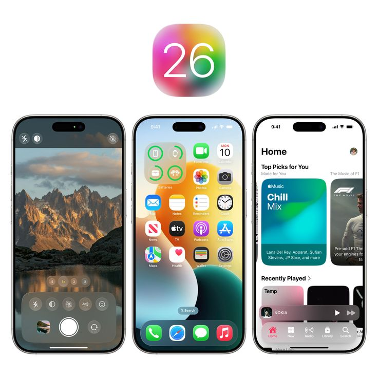

Microsoft demite 15 mil para investir R$ 400 bilhões em IA e desbancar NVIDIA
A Microsoft acaba de promover uma nova onda de demissões, atingindo mais de 15 mil funcionários apenas em 2025. Este movimento drástico acontece justamente enquanto a empresa registra um de seus melhores anos financeiros, ultrapassando a Apple em valor de mercado. O motivo? Uma aposta massiva de US$ 80 bilhões (aproximadamente R$ 400 bilhões) em infraestrutura de inteligência artificial.
Quais iPhones vão atualizar para o iOS 26? Veja a lista

O iOS 26 foi anunciado pela Apple na WWDC 2025 e estará disponível para iPhone 11 e modelos mais recentes. Além da mudança no nome e do visual novo, a atualização traz novos recursos de IA, como a tradução ao vivo, e será liberado a todos os usuários até o fim do ano.
iPhones que vão receber o iOS 26 Segundo a Apple, os seguintes modelos vão receber o iOS 26:
- iPhone 16
- iPhone 16 Plus
- iPhone 16 Pro
- iPhone 16 Pro Max
- iPhone 16e
- iPhone 15
- iPhone 15 Plus
- iPhone 15 Pro
- iPhone 15 Pro Max
- iPhone 14
- iPhone 14 Plus
- iPhone 14 Pro
- iPhone 14 Pro Max
- iPhone 13
- iPhone 13 mini
- iPhone 13 Pro
- iPhone 13 Pro Max
- iPhone 12
- iPhone 12 mini
- iPhone 12 Pro
- iPhone 12 Pro Max
- iPhone 11
- iPhone 11 Pro
- iPhone 11 Pro Max
- iPhone SE (2ª geração e posterior)